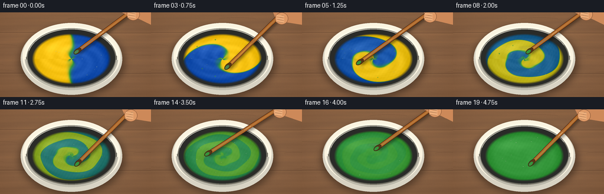
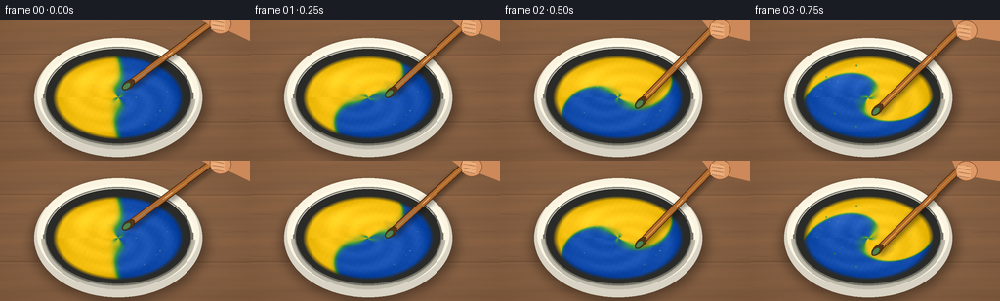

CODING AGENTS AS PIXEL WORLD MODELS
traex/GPT-5.6-Sol · material_0000
点击播放 · 原生 RGB 像素
逐轮保存的候选
回放视频、检查图与代码变化。
每份候选均可单独播放。实际图片检查记录在下方工具轨迹中。
候选 01播放与检查图
点击播放 · 原生 RGB 像素


展开代码变化
--- 上一保存版本
+++ 本次保存版本
@@ -0,0 +1,270 @@
+from pathlib import Path
+import math
+import numpy as np
+from PIL import Image, ImageDraw, ImageFilter
+import artifact_io
+
+# Deterministic procedural rendering. Everything is rendered at 3x and reduced
+# for soft photographic edges.
+W, H, N = 256, 144, 20
+S = 3
+WW, HH = W*S, H*S
+rng = np.random.default_rng(1729)
+
+
+def smoothstep(a, b, x):
+ z = np.clip((x-a)/(b-a), 0.0, 1.0)
+ return z*z*(3.0-2.0*z)
+
+
+def make_wood():
+ y, x = np.mgrid[0:HH, 0:WW]
+ # Warm, desaturated hardwood with fine, irregular lengthwise grain.
+ grain = (2.7*np.sin(y*0.055 + 2.0*np.sin(x*0.004)) +
+ 1.8*np.sin(y*0.135 + x*0.008) +
+ 0.9*np.sin(y*0.34 + 0.6*np.sin(x*0.012)))
+ coarse = rng.normal(128, 28, (HH, WW))
+ coarse = np.asarray(Image.fromarray(np.clip(coarse, 0, 255).astype(np.uint8))
+ .filter(ImageFilter.GaussianBlur(5.0))).astype(np.float32)
+ coarse = (coarse - 128.0) / 28.0
+ fine = rng.normal(0, 1.4, (HH, WW))
+ light = 7*np.exp(-((x-120*S)/(170*S))**2 - ((y-12*S)/(100*S))**2)
+ base = np.zeros((HH, WW, 3), dtype=np.float32)
+ base[..., 0] = 132 + grain + 2.2*coarse + fine + light
+ base[..., 1] = 96 + 0.70*grain + 1.7*coarse + 0.7*fine + light*.75
+ base[..., 2] = 69 + 0.43*grain + 1.3*coarse + 0.45*fine + light*.52
+ # Subtle vignette.
+ vig = 13*((x-WW/2)/(WW*.72))**2 + 10*((y-HH/2)/(HH*.75))**2
+ base -= vig[..., None]
+ im = Image.fromarray(np.clip(base, 0, 255).astype(np.uint8), 'RGB')
+ d = ImageDraw.Draw(im, 'RGBA')
+ # Back-board joins and a few dark fibers.
+ for yy in (34, 103):
+ yy *= S
+ d.line([(0, yy), (WW, yy+S)], fill=(55,35,23,65), width=S)
+ d.line([(0, yy+2*S), (WW, yy+3*S)], fill=(214,173,120,28), width=S)
+ for k in range(17):
+ yy = int(rng.uniform(0, HH))
+ x0 = int(rng.uniform(-40, 450)*S)
+ ln = int(rng.uniform(18, 90)*S)
+ d.arc((x0, yy-2*S, x0+ln, yy+3*S), 185, 350,
+ fill=(57,36,22,int(rng.integers(16, 34))), width=1*S)
+ return im
+
+WOOD = make_wood()
+
+
+def ellipse(draw, box, fill, outline=None, width=1):
+ draw.ellipse(tuple(int(v*S) for v in box), fill=fill, outline=outline, width=max(1, int(width*S)))
+
+
+def line(draw, pts, fill, width):
+ draw.line([(int(x*S), int(y*S)) for x,y in pts], fill=fill,
+ width=max(1,int(width*S)), joint='curve')
+
+
+def paint_surface(frame_i):
+ """Create an elliptical, wet paint surface with an advected pigment field."""
+ f = frame_i/(N-1)
+ cy, cx = 79*S, 121*S
+ ry, rx = 43*S, 67*S
+ y, x = np.mgrid[0:HH, 0:WW]
+ xx = (x-cx)/rx
+ yy = (y-cy)/ry
+ r = np.sqrt(xx*xx + yy*yy)
+ th = np.arctan2(yy, xx)
+
+ # Backtrace into the original left-yellow/right-blue split. Differential
+ # rotation produces curled ribbons; nested perturbations avoid a mechanical spiral.
+ turns = 6.8*math.pi*f
+ theta0 = th - turns*(1.28 - 0.83*np.clip(r,0,1))
+ theta0 -= (1.15*f*(1-r))*np.sin(2*th - 3.0*f)
+ theta0 -= (0.42*f)*np.sin(5*th + 8*r - turns*.20)
+ x0 = r*np.cos(theta0) + 0.045*np.sin(3*theta0+5*r)
+ # p=0 yellow, p=1 blue; crisp initial division with naturally feathered seam.
+ p_raw = 1/(1+np.exp(-np.clip(x0/0.025, -30, 30)))
+ mixed = smoothstep(0.10, 0.94, f)**1.18
+ p = 0.5 + (p_raw-0.5)*(1-mixed)
+ # Thin unmixed filaments survive a little longer around mid-mix.
+ filament = np.sin(13*theta0 + 19*r - 8*f)*np.exp(-((p_raw-.5)/.22)**2)
+ p += filament * (0.035*math.sin(math.pi*min(1, f/.86))) * (1-mixed)
+ p = np.clip(p, 0, 1)
+
+ yellow = np.array([246, 196, 20.], np.float32)
+ green = np.array([53, 151, 60.], np.float32)
+ blue = np.array([22, 80, 180.], np.float32)
+ lo = np.clip(p*2, 0, 1)[...,None]
+ hi = np.clip((p-.5)*2, 0, 1)[...,None]
+ col = np.where((p[...,None] <= .5), yellow*(1-lo)+green*lo,
+ green*(1-hi)+blue*hi)
+
+ # Paint thickness, swirl ridges, and wet specular sheen.
+ edge_dark = -21*np.clip((r-.74)/.26, 0, 1)
+ ridge = 5.0*np.sin(18*r - 3.5*th + turns*.35) * (0.25+0.75*(1-mixed))
+ ridge += 4.0*np.cos(10*theta0 + 16*r) * f*(1-mixed)
+ sheen = 16*np.exp(-(((xx+.34)/.54)**2 + ((yy+.42)/.22)**2))
+ sheen += 6*np.exp(-(((xx-.25)/.18)**2 + ((yy-.12)/.48)**2))
+ col += (edge_dark + ridge + sheen)[...,None]
+
+ # Very subtle paint texture.
+ tex = 1.0*np.sin(x*.37+y*.21) + .65*np.sin(x*.11-y*.29)
+ col += tex[...,None]
+ alpha = np.clip((1.0-r)*12, 0, 1)
+ rgba = np.zeros((HH,WW,4), np.uint8)
+ rgba[...,:3] = np.clip(col,0,255).astype(np.uint8)
+ rgba[...,3] = (alpha*255).astype(np.uint8)
+ return Image.fromarray(rgba, 'RGBA'), p, r
+
+
+def draw_rotated_ellipse(layer, center, size, angle, fill, outline=None, ow=1):
+ # Draw an anti-aliased ellipse in a small patch and rotate around its center.
+ pw, ph = int((size[0]+8)*S), int((size[1]+8)*S)
+ patch = Image.new('RGBA', (pw,ph), (0,0,0,0))
+ pd = ImageDraw.Draw(patch, 'RGBA')
+ pd.ellipse((4*S,4*S,(4+size[0])*S,(4+size[1])*S), fill=fill,
+ outline=outline, width=max(1,int(ow*S)))
+ patch = patch.rotate(-angle*180/math.pi, resample=Image.Resampling.BICUBIC, expand=True)
+ px = int(center[0]*S-patch.width/2)
+ py = int(center[1]*S-patch.height/2)
+ layer.alpha_composite(patch, (px,py))
+
+
+def spoon_geometry(i, phase_offset=0.0):
+ f = (i+phase_offset)/(N-1)
+ a = -1.15 + 2*math.pi*2.35*f
+ # Stirring point traces a brisk compressed circle.
+ tip = (121 + 25*math.cos(a), 79 + 14*math.sin(a))
+ # Hand/upper grip describes a smaller counter-wobble near the top right.
+ grip = (221 + 5*math.cos(a+.5), -1 + 4*math.sin(a+.25))
+ return a, tip, grip
+
+
+def render_frame(i):
+ f = i/(N-1)
+ base = WOOD.copy().convert('RGBA')
+
+ # Soft cast shadow of the bowl.
+ sh = Image.new('RGBA', (WW,HH), (0,0,0,0))
+ sd = ImageDraw.Draw(sh, 'RGBA')
+ ellipse(sd, (33,25,211,143), (25,17,12,120))
+ sh = sh.filter(ImageFilter.GaussianBlur(6*S))
+ base.alpha_composite(sh)
+
+ # Bowl body and lip: layered ellipses give porcelain thickness and depth.
+ d = ImageDraw.Draw(base, 'RGBA')
+ ellipse(d, (35,18,207,140), (213,211,199,255))
+ ellipse(d, (38,18,204,132), (247,244,229,255))
+ ellipse(d, (44,26,198,129), (113,111,102,180))
+ ellipse(d, (47,29,195,126), (42,43,41,210))
+
+ surf, pfield, rfield = paint_surface(i)
+ base.alpha_composite(surf)
+
+ # Small bubbles and wet pin highlights move with the stirred surface.
+ details = Image.new('RGBA', (WW,HH), (0,0,0,0))
+ dd = ImageDraw.Draw(details, 'RGBA')
+ bubble_seed = np.random.default_rng(900+i//3)
+ for k in range(15):
+ ang = bubble_seed.uniform(0,2*math.pi)
+ rad = math.sqrt(bubble_seed.uniform(.05,.84))
+ bx = 121 + 63*rad*math.cos(ang)
+ by = 79 + 39*rad*math.sin(ang)
+ rr = bubble_seed.uniform(.35,1.15)
+ ellipse(dd, (bx-rr,by-rr*.7,bx+rr,by+rr*.7), (255,255,235,55),
+ (20,65,38,45), .35)
+
+ # Strong porcelain rim over the paint edge, with interrupted highlights.
+ # Use arcs rather than another fill so the surface remains visible.
+ dd.arc((42*S,24*S,200*S,132*S), 183, 355, fill=(255,252,238,238), width=3*S)
+ dd.arc((42*S,24*S,200*S,132*S), 3, 178, fill=(181,180,169,230), width=4*S)
+ dd.arc((46*S,28*S,196*S,128*S), 195, 333, fill=(255,255,247,145), width=1*S)
+ dd.arc((47*S,29*S,195*S,126*S), 13, 163, fill=(48,52,47,110), width=1*S)
+ base.alpha_composite(details)
+
+ # Vigor: blurred ghost positions on the shaft and a short curved wake.
+ ghosts = Image.new('RGBA', (WW,HH), (0,0,0,0))
+ gd = ImageDraw.Draw(ghosts, 'RGBA')
+ if 0 < i < 18:
+ for off, alpha in [(-.34,25),(-.18,42),(.16,26)]:
+ _, gt, gg = spoon_geometry(i, off)
+ line(gd, [gt,gg], (64,38,18,alpha), 6)
+ # Wake arc on paint around current stirring path.
+ a, tip, grip = spoon_geometry(i)
+ wakebox = ((121-31)*S,(79-20)*S,(121+31)*S,(79+20)*S)
+ deg = a*180/math.pi
+ gd.arc(wakebox, deg-34, deg+20, fill=(238,246,216,70), width=2*S)
+ ghosts = ghosts.filter(ImageFilter.GaussianBlur(1.5*S))
+ base.alpha_composite(ghosts)
+
+ # Spoon shadow, then wooden stirrer. It remains continuous to the offscreen hand.
+ a, tip, grip = spoon_geometry(i)
+ sp = Image.new('RGBA', (WW,HH), (0,0,0,0))
+ sdraw = ImageDraw.Draw(sp, 'RGBA')
+ line(sdraw, [(tip[0]+2,tip[1]+3),(grip[0]+2,grip[1]+3)], (17,14,10,100), 7.5)
+ shadow = sp.filter(ImageFilter.GaussianBlur(2.2*S))
+ base.alpha_composite(shadow)
+
+ utensil = Image.new('RGBA', (WW,HH), (0,0,0,0))
+ ud = ImageDraw.Draw(utensil, 'RGBA')
+ # shaft with dark edge, honey-colored core and a long linear highlight
+ line(ud, [tip,grip], (73,40,17,255), 7.2)
+ line(ud, [tip,grip], (177,104,43,255), 5.4)
+ line(ud, [(tip[0]+.7,tip[1]-.4),(grip[0]+.7,grip[1]-.4)], (241,177,92,145), 1.2)
+ shaft_angle = math.atan2(grip[1]-tip[1],grip[0]-tip[0])
+ # Flattened stirring paddle at its paint-coated end.
+ draw_rotated_ellipse(utensil, tip, (15,8), shaft_angle, (83,55,25,255), (55,31,13,255), .8)
+ coat_col = (55,152,62,245)
+ if f < .18:
+ # At the beginning the paddle visibly drags both primary colors.
+ coat_col = (80,133,82,245)
+ draw_rotated_ellipse(utensil, (tip[0]-2*math.cos(shaft_angle),tip[1]-2*math.sin(shaft_angle)),
+ (9,5), shaft_angle, coat_col, (30,96,48,150), .4)
+ base.alpha_composite(utensil)
+
+ # Partial hand gripping the stirrer at the top edge. Restrained shapes keep focus on paint.
+ hand = Image.new('RGBA', (WW,HH), (0,0,0,0))
+ hd = ImageDraw.Draw(hand, 'RGBA')
+ hx, hy = grip
+ # wrist entering from upper-right and palm around grip
+ hd.polygon([(207*S,0),(256*S,0),(256*S,21*S),((hx+8)*S,(hy+14)*S),
+ ((hx-8)*S,(hy+10)*S)], fill=(202,137,91,255))
+ ellipse(hd, (hx-10,hy-3,hx+12,hy+18), (219,153,104,255), (128,75,47,150), .7)
+ # curled fingers crossing the handle
+ for j in range(3):
+ yy = hy + 3 + j*4.2
+ line(hd, [(hx-8,yy),(hx+5,yy+2)], (234,174,125,255), 4.2)
+ line(hd, [(hx-7,yy+1.4),(hx+4,yy+3.2)], (116,67,42,65), .7)
+ # soft knuckle light
+ line(hd, [(hx-6,hy+1),(hx+5,hy+3)], (255,208,162,120), 1.1)
+ base.alpha_composite(hand)
+
+ # A few tiny energetic flecks, mainly within the bowl, at mid-stir.
+ if .13 < f < .82:
+ fleck = Image.new('RGBA', (WW,HH), (0,0,0,0))
+ fd = ImageDraw.Draw(fleck, 'RGBA')
+ frng = np.random.default_rng(5000+i)
+ for k in range(4):
+ aa = frng.uniform(0,2*math.pi)
+ rr = frng.uniform(41,61)
+ xx = 121 + rr*math.cos(aa)
+ yy = 79 + rr*.62*math.sin(aa)
+ sz = frng.uniform(.45,1.1)
+ ellipse(fd,(xx-sz,yy-sz,xx+sz,yy+sz),(53,148,61,170))
+ base.alpha_composite(fleck)
+
+ # Downsample with Lanczos for clean antialiasing and a faint warm photographic grade.
+ out = base.convert('RGB').resize((W,H), Image.Resampling.LANCZOS)
+ arr = np.asarray(out).astype(np.float32)
+ arr[...,0] *= 1.015
+ arr[...,2] *= .985
+ return np.clip(arr,0,255).astype(np.uint8)
+
+
+def main():
+ frames = np.stack([render_frame(i) for i in range(N)], axis=0)
+ artifact_io.save(frames, Path(__file__).resolve().parent)
+ print('saved', frames.shape, frames.dtype)
+
+
+if __name__ == '__main__':
+ main()
可观测工具轨迹
实际执行的命令与返回图片。
命令 1exit 0
/bin/bash -lc 'cat prompt.txt'
命令 2exit 0
/bin/bash -lc 'cat GENERATION_RULES.md'
命令 3exit 0
/bin/bash -lc "cat task_spec.json && printf '\\n---FILES---\\n' && find . -maxdepth 2 -type f -printf '%p\\n' | sort"
命令 4exit 0
/bin/bash -lc "sed -n '1,240p' artifact_io.py && python - <<'PY'
import PIL, numpy
print('PIL', PIL.__version__, 'numpy', numpy.__version__)
PY"命令 5exit 1
/bin/bash -lc "cat > generate.py <<'PY'
from pathlib import Path
import math
import numpy as np
from PIL import Image, ImageDraw, ImageFilter
import artifact_io
# Deterministic procedural rendering. Everything is rendered at 3x and reduced
# for soft photographic edges.
W, H, N = 256, 144, 20
S = 3
WW, HH = W*S, H*S
rng = np.random.default_rng(1729)
def smoothstep(a, b, x):
z = np.clip((x-a)/(b-a), 0.0, 1.0)
return z*z*(3.0-2.0*z)
def make_wood():
y, x = np.mgrid[0:HH, 0:WW]
# Warm, desaturated hardwood with fine, irregular lengthwise grain.
grain = (2.7*np.sin(y*0.055 + 2.0*np.sin(x*0.004)) +
1.8*np.sin(y*0.135 + x*0.008) +
0.9*np.sin(y*0.34 + 0.6*np.sin(x*0.012)))
coarse = rng.normal(0, 1, (HH, WW)).astype(np.float32)
coarse = np.asarray(Image.fromarray(coarse, mode='F').filter(ImageFilter.GaussianBlur(5.0)))
fine = rng.normal(0, 1.4, (HH, WW))
light = 7*np.exp(-((x-120*S)/(170*S))**2 - ((y-12*S)/(100*S))**2)
base = np.zeros((HH, WW, 3), dtype=np.float32)
base[..., 0] = 132 + grain + 2.2*coarse + fine + light
base[..., 1] = 96 + 0.70*grain + 1.7*coarse + 0.7*fine + light*.75
base[..., 2] = 69 + 0.43*grain + 1.3*coarse + 0.45*fine + light*.52
# Subtle vignette.
vig = 13*((x-WW/2)/(WW*.72))**2 + 10*((y-HH/2)/(HH*.75))**2
base -= vig[..., None]
im = Image.fromarray(np.clip(base, 0, 255).astype(np.uint8), 'RGB')
d = ImageDraw.Draw(im, 'RGBA')
# Back-board joins and a few dark fibers.
for yy in (34, 103):
yy *= S
d.line([(0, yy), (WW, yy+S)], fill=(55,35,23,65), width=S)
d.line([(0, yy+2*S), (WW, yy+3*S)], fill=(214,173,120,28), width=S)
for k in range(17):
yy = int(rng.uniform(0, HH))
x0 = int(rng.uniform(-40, 450)*S)
ln = int(rng.uniform(18, 90)*S)
d.arc((x0, yy-2*S, x0+ln, yy+3*S), 185, 350,
fill=(57,36,22,int(rng.integers(16, 34))), width=1*S)
return im
WOOD = make_wood()
def ellipse(draw, box, fill, outline=None, width=1):
draw.ellipse(tuple(int(v*S) for v in box), fill=fill, outline=outline, width=max(1, int(width*S)))
def line(draw, pts, fill, width):
draw.line([(int(x*S), int(y*S)) for x,y in pts], fill=fill,
width=max(1,int(width*S)), joint='curve')
def paint_surface(frame_i):
\"\"\"Create an elliptical, wet paint surface with an advected pigment field.\"\"\"
f = frame_i/(N-1)
cy, cx = 79*S, 121*S
ry, rx = 43*S, 67*S
y, x = np.mgrid[0:HH, 0:WW]
xx = (x-cx)/rx
yy = (y-cy)/ry
r = np.sqrt(xx*xx + yy*yy)
th = np.arctan2(yy, xx)
# Backtrace into the original left-yellow/right-blue split. Differential
# rotation produces curled ribbons; nested perturbations avoid a mechanical spiral.
turns = 6.8*math.pi*f
theta0 = th - turns*(1.28 - 0.83*np.clip(r,0,1))
theta0 -= (1.15*f*(1-r))*np.sin(2*th - 3.0*f)
theta0 -= (0.42*f)*np.sin(5*th + 8*r - turns*.20)
x0 = r*np.cos(theta0) + 0.045*np.sin(3*theta0+5*r)
# p=0 yellow, p=1 blue; crisp initial division with naturally feathered seam.
p_raw = 1/(1+np.exp(-np.clip(x0/0.025, -30, 30)))
mixed = smoothstep(0.10, 0.94, f)**1.18
p = 0.5 + (p_raw-0.5)*(1-mixed)
# Thin unmixed filaments survive a little longer around mid-mix.
filament = np.sin(13*theta0 + 19*r - 8*f)*np.exp(-((p_raw-.5)/.22)**2)
p += filament * (0.035*math.sin(math.pi*min(1, f/.86))) * (1-mixed)
p = np.clip(p, 0, 1)
yellow = np.array([246, 196, 20.], np.float32)
green = np.array([53, 151, 60.], np.float32)
blue = np.array([22, 80, 180.], np.float32)
lo = np.clip(p*2, 0, 1)[...,None]
hi = np.clip((p-.5)*2, 0, 1)[...,None]
col = np.where((p[...,None] <= .5), yellow*(1-lo)+green*lo,
green*(1-hi)+blue*hi)
# Paint thickness, swirl ridges, and wet specular sheen.
edge_dark = -21*np.clip((r-.74)/.26, 0, 1)
ridge = 5.0*np.sin(18*r - 3.5*th + turns*.35) * (0.25+0.75*(1-mixed))
ridge += 4.0*np.cos(10*theta0 + 16*r) * f*(1-mixed)
sheen = 16*np.exp(-(((xx+.34)/.54)**2 + ((yy+.42)/.22)**2))
sheen += 6*np.exp(-(((xx-.25)/.18)**2 + ((yy-.12)/.48)**2))
col += (edge_dark + ridge + sheen)[...,None]
# Very subtle paint texture.
tex = 1.0*np.sin(x*.37+y*.21) + .65*np.sin(x*.11-y*.29)
col += tex[...,None]
alpha = np.clip((1.0-r)*12, 0, 1)
rgba = np.zeros((HH,WW,4), np.uint8)
rgba[...,:3] = np.clip(col,0,255).astype(np.uint8)
rgba[...,3] = (alpha*255).astype(np.uint8)
return Image.fromarray(rgba, 'RGBA'), p, r
def draw_rotated_ellipse(layer, center, size, angle, fill, outline=None, ow=1):
# Draw an anti-aliased ellipse in a small patch and rotate around its center.
pw, ph = int((size[0]+8)*S), int((size[1]+8)*S)
patch = Image.new('RGBA', (pw,ph), (0,0,0,0))
pd = ImageDraw.Draw(patch, 'RGBA')
pd.ellipse((4*S,4*S,(4+size[0])*S,(4+size[1])*S), fill=fill,
outline=outline, width=max(1,int(ow*S)))
patch = patch.rotate(-angle*180/math.pi, resample=Image.Resampling.BICUBIC, expand=True)
px = int(center[0]*S-patch.width/2)
py = int(center[1]*S-patch.height/2)
layer.alpha_composite(patch, (px,py))
def spoon_geometry(i, phase_offset=0.0):
f = (i+phase_offset)/(N-1)
a = -1.15 + 2*math.pi*2.35*f
# Stirring point traces a brisk compressed circle.
tip = (121 + 25*math.cos(a), 79 + 14*math.sin(a))
# Hand/upper grip describes a smaller counter-wobble near the top right.
grip = (221 + 5*math.cos(a+.5), -1 + 4*math.sin(a+.25))
return a, tip, grip
def render_frame(i):
f = i/(N-1)
base = WOOD.copy().convert('RGBA')
# Soft cast shadow of the bowl.
sh = Image.new('RGBA', (WW,HH), (0,0,0,0))
sd = ImageDraw.Draw(sh, 'RGBA')
ellipse(sd, (33,25,211,143), (25,17,12,120))
sh = sh.filter(ImageFilter.GaussianBlur(6*S))
base.alpha_composite(sh)
# Bowl body and lip: layered ellipses give porcelain thickness and depth.
d = ImageDraw.Draw(base, 'RGBA')
ellipse(d, (35,18,207,140), (213,211,199,255))
ellipse(d, (38,18,204,132), (247,244,229,255))
ellipse(d, (44,26,198,129), (113,111,102,180))
ellipse(d, (47,29,195,126), (42,43,41,210))
surf, pfield, rfield = paint_surface(i)
base.alpha_composite(surf)
# Small bubbles and wet pin highlights move with the stirred surface.
details = Image.new('RGBA', (WW,HH), (0,0,0,0))
dd = ImageDraw.Draw(details, 'RGBA')
bubble_seed = np.random.default_rng(900+i//3)
for k in range(15):
ang = bubble_seed.uniform(0,2*math.pi)
rad = math.sqrt(bubble_seed.uniform(.05,.84))
bx = 121 + 63*rad*math.cos(ang)
by = 79 + 39*rad*math.sin(ang)
rr = bubble_seed.uniform(.35,1.15)
ellipse(dd, (bx-rr,by-rr*.7,bx+rr,by+rr*.7), (255,255,235,55),
(20,65,38,45), .35)
# Strong porcelain rim over the paint edge, with interrupted highlights.
# Use arcs rather than another fill so the surface remains visible.
dd.arc((42*S,24*S,200*S,132*S), 183, 355, fill=(255,252,238,238), width=3*S)
dd.arc((42*S,24*S,200*S,132*S), 3, 178, fill=(181,180,169,230), width=4*S)
dd.arc((46*S,28*S,196*S,128*S), 195, 333, fill=(255,255,247,145), width=1*S)
dd.arc((47*S,29*S,195*S,126*S), 13, 163, fill=(48,52,47,110), width=1*S)
base.alpha_composite(details)
# Vigor: blurred ghost positions on the shaft and a short curved wake.
ghosts = Image.new('RGBA', (WW,HH), (0,0,0,0))
gd = ImageDraw.Draw(ghosts, 'RGBA')
if 0 < i < 18:
for off, alpha in [(-.34,25),(-.18,42),(.16,26)]:
_, gt, gg = spoon_geometry(i, off)
line(gd, [gt,gg], (64,38,18,alpha), 6)
# Wake arc on paint around current stirring path.
a, tip, grip = spoon_geometry(i)
wakebox = ((121-31)*S,(79-20)*S,(121+31)*S,(79+20)*S)
deg = a*180/math.pi
gd.arc(wakebox, deg-34, deg+20, fill=(238,246,216,70), width=2*S)
ghosts = ghosts.filter(ImageFilter.GaussianBlur(1.5*S))
base.alpha_composite(ghosts)
# Spoon shadow, then wooden stirrer. It remains continuous to the offscreen hand.
a, tip, grip = spoon_geometry(i)
sp = Image.new('RGBA', (WW,HH), (0,0,0,0))
sdraw = ImageDraw.Draw(sp, 'RGBA')
line(sdraw, [(tip[0]+2,tip[1]+3),(grip[0]+2,grip[1]+3)], (17,14,10,100), 7.5)
shadow = sp.filter(ImageFilter.GaussianBlur(2.2*S))
base.alpha_composite(shadow)
utensil = Image.new('RGBA', (WW,HH), (0,0,0,0))
ud = ImageDraw.Draw(utensil, 'RGBA')
# shaft with dark edge, honey-colored core and a long linear highlight
line(ud, [tip,grip], (73,40,17,255), 7.2)
line(ud, [tip,grip], (177,104,43,255), 5.4)
line(ud, [(tip[0]+.7,tip[1]-.4),(grip[0]+.7,grip[1]-.4)], (241,177,92,145), 1.2)
shaft_angle = math.atan2(grip[1]-tip[1],grip[0]-tip[0])
# Flattened stirring paddle at its paint-coated end.
draw_rotated_ellipse(utensil, tip, (15,8), shaft_angle, (83,55,25,255), (55,31,13,255), .8)
coat_col = (55,152,62,245)
if f < .18:
# At the beginning the paddle visibly drags both primary colors.
coat_col = (80,133,82,245)
draw_rotated_ellipse(utensil, (tip[0]-2*math.cos(shaft_angle),tip[1]-2*math.sin(shaft_angle)),
(9,5), shaft_angle, coat_col, (30,96,48,150), .4)
base.alpha_composite(utensil)
# Partial hand gripping the stirrer at the top edge. Restrained shapes keep focus on paint.
hand = Image.new('RGBA', (WW,HH), (0,0,0,0))
hd = ImageDraw.Draw(hand, 'RGBA')
hx, hy = grip
# wrist entering from upper-right and palm around grip
hd.polygon([(207*S,0),(256*S,0),(256*S,21*S),((hx+8)*S,(hy+14)*S),
((hx-8)*S,(hy+10)*S)], fill=(202,137,91,255))
ellipse(hd, (hx-10,hy-3,hx+12,hy+18), (219,153,104,255), (128,75,47,150), .7)
# curled fingers crossing the handle
for j in range(3):
yy = hy + 3 + j*4.2
line(hd, [(hx-8,yy),(hx+5,yy+2)], (234,174,125,255), 4.2)
line(hd, [(hx-7,yy+1.4),(hx+4,yy+3.2)], (116,67,42,65), .7)
# soft knuckle light
line(hd, [(hx-6,hy+1),(hx+5,hy+3)], (255,208,162,120), 1.1)
base.alpha_composite(hand)
# A few tiny energetic flecks, mainly within the bowl, at mid-stir.
if .13 < f < .82:
fleck = Image.new('RGBA', (WW,HH), (0,0,0,0))
fd = ImageDraw.Draw(fleck, 'RGBA')
frng = np.random.default_rng(5000+i)
for k in range(4):
aa = frng.uniform(0,2*math.pi)
rr = frng.uniform(41,61)
xx = 121 + rr*math.cos(aa)
yy = 79 + rr*.62*math.sin(aa)
sz = frng.uniform(.45,1.1)
ellipse(fd,(xx-sz,yy-sz,xx+sz,yy+sz),(53,148,61,170))
base.alpha_composite(fleck)
# Downsample with Lanczos for clean antialiasing and a faint warm photographic grade.
out = base.convert('RGB').resize((W,H), Image.Resampling.LANCZOS)
arr = np.asarray(out).astype(np.float32)
arr[...,0] *= 1.015
arr[...,2] *= .985
return np.clip(arr,0,255).astype(np.uint8)
def main():
frames = np.stack([render_frame(i) for i in range(N)], axis=0)
artifact_io.save(frames, Path(__file__).resolve().parent)
print('saved', frames.shape, frames.dtype)
if __name__ == '__main__':
main()
PY
python generate.py"命令 6exit 0
/bin/bash -lc 'python generate.py'
命令 7exit 0
/bin/bash -lc 'ls -lh generate.py pixels.npz index.html inspection.png transition_check.png frames/00.png frames/19.png && python -m py_compile generate.py'
命令 8exit 0
/bin/bash -lc "python - <<'PY'
import numpy as np
from PIL import Image
fs=np.stack([np.asarray(Image.open(f'frames/{i:02d}.png').convert('RGB')) for i in range(20)])
print('shape/dtype/range',fs.shape,fs.dtype,fs.min(),fs.max())
# inner paint region
Y,X=np.mgrid[:144,:256]; m=((X-121)/58)**2+((Y-79)/34)**2<1
for i in [0,1,4,8,12,16,19]:
a=fs[i][m]
yellow=((a[:,0]>180)&(a[:,1]>130)&(a[:,2]<80)).mean()
blue=((a[:,2]>110)&(a[:,0]<80)&(a[:,1]<130)).mean()
green=((a[:,1]>95)&(a[:,1]>a[:,0]*1.35)&(a[:,1]>a[:,2]*1.15)).mean()
print(i,'mean',a.mean(0).round(1),'yellow/blue/green',round(yellow,3),round(blue,3),round(green,3))
print('mean abs frame deltas',np.abs(np.diff(fs.astype('i2'),axis=0)).mean((1,2,3)).round(2).tolist())
# validate packed artifact dimensions
p=np.load('pixels.npz')['pixels']; print('npz',p.shape,p.dtype)
PY"保存候选 1 份；完成命令 8 次；可验证图片返回 0 张。原始 API 响应与完整日志保留在本地。